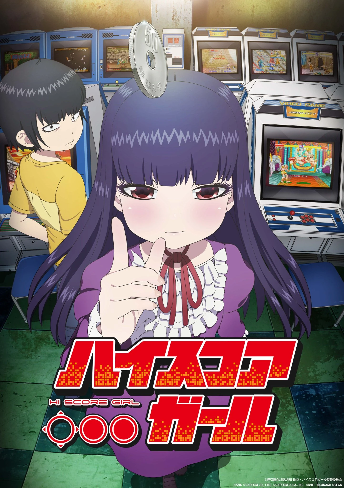
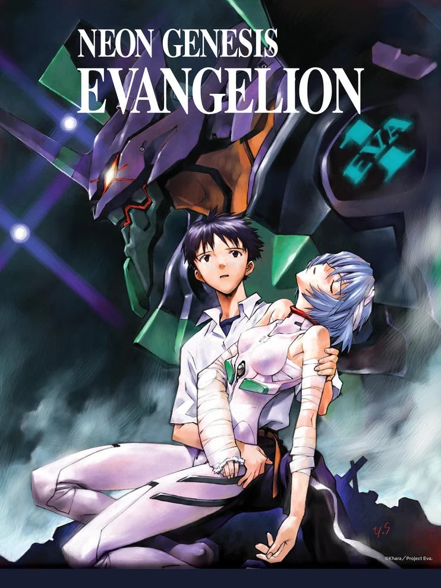

|  |
High Score Girl |
La historia sigue a Yaguchi Haruo, un muchacho de sexto en el año 1991 y que vive para los videojuegos. No es popular en la escuela, no es guapo, no es divertido y ni siquiera es simpático. Lo único que se le dan bien, son los videojuegos. Un día, en una sala de juegos, se encuentra a Oono Akira, compañera de clase y que es linda, inteligente, lista y popular. Ambos jugarán a Street Fighter II, solo para que Haruo pierda muchas partidas seguidas contra la chica, la cual resulta ser invencible en cualquier juego. Akira comenzará a seguir a Haruo en todas sus visitas a los recreativos para pegarle palizas en todo juego existente, algo que al muchacho molestará bastante en un inicio… pero que acabará haciendo que forjen una extraña amistad. |
Mirar Aqui |
8/10 |
|  |
Neon Genesis Evangelion |
según cuentan los libros de historia, el 13 de Septiembre del 2000, un enorme meteorito chocó contra la Antártida, causando el derretimiento del Polo Sur y la consecuente inundación y destrucción de todas las ciudades costeras. A este evento crucial se lo denomino Segundo Impacto -El primero fue el que destruyó a los dinosaurios-. La Tierra atravesó luego de ello un estado de crisis y catástrofes naturales y más de mitad de la población humana murió. Han pasado 15 años desde el Segundo Impacto cuando Tokyo-3, es atacada por un misterioso ser orgánico gigante, sin embargo esto no parece ser una sorpresa para un selecto grupo de gente de una organización de la ONU llamada NERV. Ellos se refieren al enemigo como "Tercer Ángel" y han desarrollado unos enigmáticos robots gigantes llamados EVA con una particularidad, solo pueden ser piloteados por jóvenes de 14 años con caracteristicas no del todo claras. |
Mirar Aqui |
8/10 |